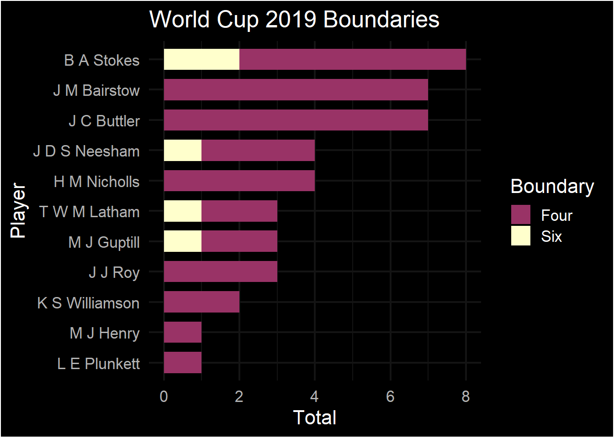

Importing required libraries:
library(tidyr)
library(dplyr)
library(tidyr)
library(dplyr)
library(ggplot2)
library(ggthemes)
library(ggdark)Importing Data:
Tidy the data for analysis:
Visualising with ggplot:
ggplot(wcb_tidy, aes(reorder(Name, Total), Total, fill = Boundary)) +
geom_bar(stat = 'identity', width = .7) +
coord_flip() +
dark_theme_minimal(base_family = "Helvetica", base_size = 16) +
labs(title = 'World Cup 2019 Boundaries', x = 'Player') +
scale_fill_excel()